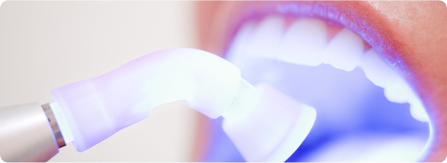

5 Dicas Essenciais para Manter seu Sorriso Saudável
Manter uma rotina de cuidados diários com a saúde bucal é fundamental para prevenir problemas e garantir um sorriso bonito. Veja nossas dicas simples que podem fazer toda a diferença no seu dia a dia:
Alimentação Saudável para Dentes Fortes
Você sabia que o que você come influencia diretamente na saúde dos seus dentes? Alguns alimentos podem fortalecer o esmalte, enquanto outros aumentam o risco de cáries. Veja como fazer escolhas mais inteligentes:
Como Cuidar dos Dentes das Crianças: Dicas para os Pais
Cuidar dos dentes dos pequenos desde cedo é essencial para garantir uma dentição saudável na vida adulta. Aqui estão algumas dicas para ajudar os pais a cuidar da saúde bucal das crianças:
Clareamento Dental: O que Você Precisa Saber Antes de Fazer
O clareamento dental é uma das formas mais populares de melhorar a estética do sorriso. No entanto, antes de se submeter ao tratamento, é importante conhecer algumas informações:
Como Evitar o Mau Hálito: Dicas Simples e Eficazes
O mau hálito, ou halitose, pode ser um problema constrangedor, mas a boa notícia é que, na maioria das vezes, ele pode ser prevenido com bons hábitos de higiene bucal. Confira algumas dicas simples para manter o hálito fresco: